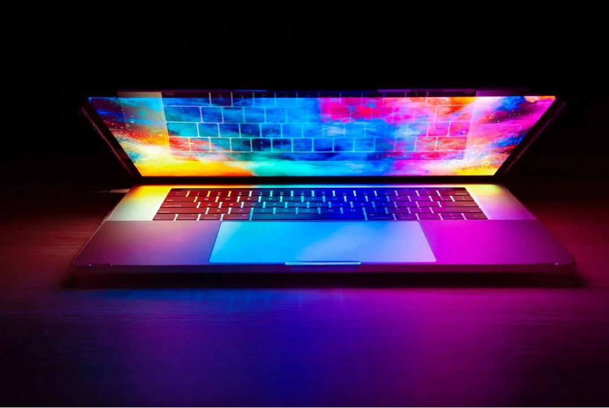
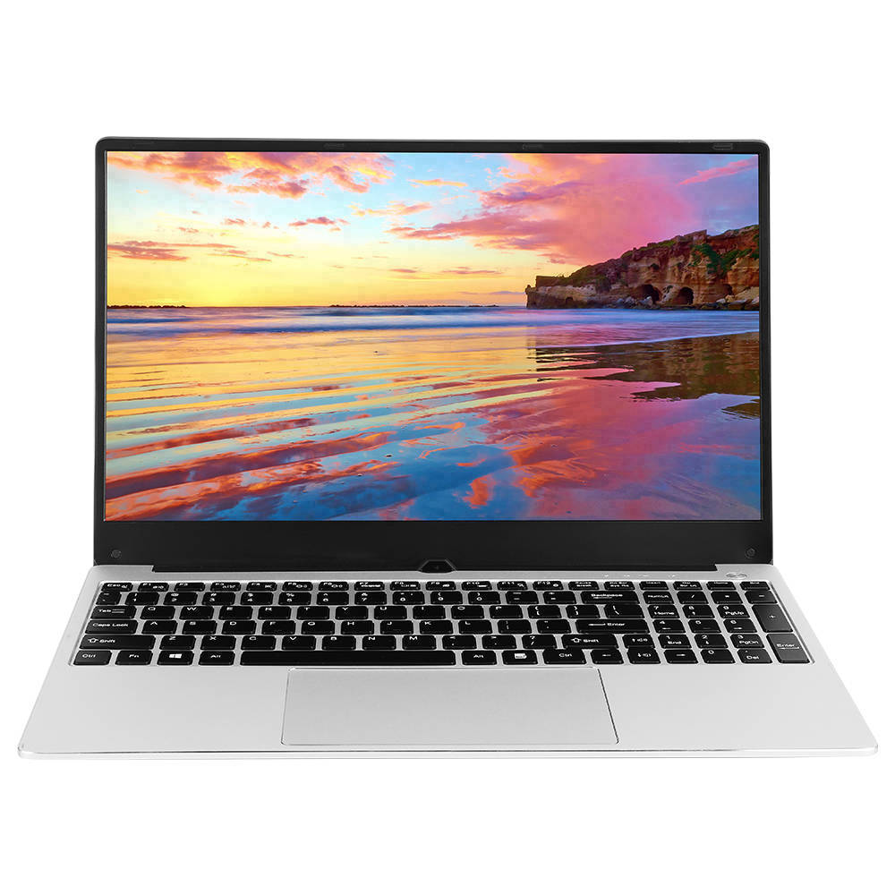
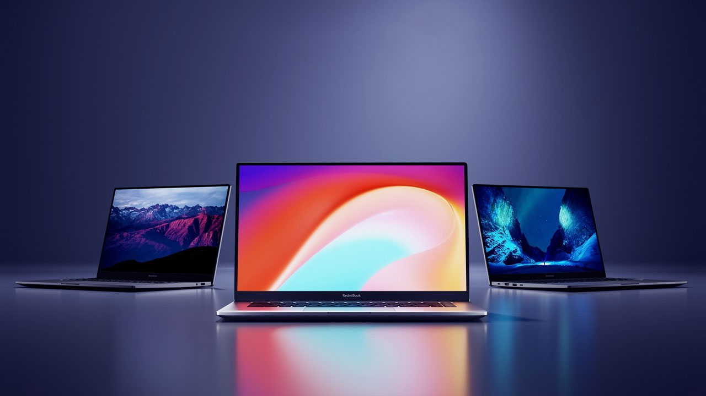
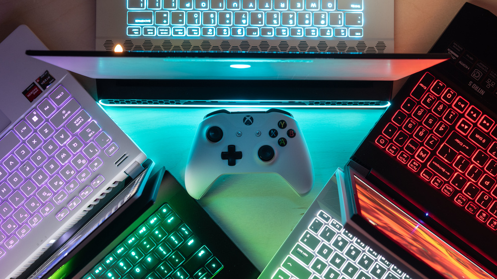

Hasiera
Hasiera orri honetan Laptop-ei buruzko informazio generala agertuko da, horretaz gain, gehien saldutako Laptop-a agertu egingo da egunero eguneratzen dena.

Ordenagailu eramangarrien munduak, teknologiaren munduak oro har bezala, konponbideak eskaintzen ditu erabiltzaileen behar bakoitzarentzat. Lan egiteko edo jolasteko, etxean erabiltzeko edo garraiatzeko, fabrikatzaileek erabiltzaileei entzuten dakite eta batzuentzat zein besteentzat gailuak eskaintzen dituzte.
Gure web orrian gungo merkatuan aurki ditzakezun portatil mota guztiak zehaztu nahi dizkizugu. Ezaugarri nagusiak eta eredu ezagunenak azaldu ondoren, nahi duzun horretara hobekien egokitzen dena aukeratzeko moduan egongo direla bermatzen dizugu.
Ordenagailu eramangarrien munduak, teknologiaren munduak oro har bezala, konponbideak eskaintzen ditu erabiltzaileen behar bakoitzarentzat. Lan egiteko edo jolasteko, etxean erabiltzeko edo garraiatzeko, fabrikatzaileek erabiltzaileei entzuten dakite eta batzuentzat zein besteentzat gailuak eskaintzen dituzte.
Notebook
Lehenengo eramangarria notebook-ak dira, ordenagailu eramangarriaren sinonimo gisa aurkeztuak. Gailu hau kontsumo txikiko PUZ batek, teklatu integratu batek, pantaila batek eta sagua tradizional baten funtzionaltasuna duen ukipen-panel batek osatzen dute. Gainera, bateria integratu bat du, denbora jakin batean konektatuta egon gabe erabiltzeko aukera ematen duena.
Eredu nagusiak bulego-erabilerara eta lan-giroan bideratuta zeuden arren, azken aldian ekipo oso indartsuak eta beste erabiltzaile batzuei zuzendutakoak aurki daitezke, hala nola gamerrei buruzkoak. Ordenagailu Osagaien notebook ezagunenen artean, jarraian aipatuko ditugunak nabarmentzen dira.

Ultrabook
Gaur egungo merkatuan oso ezaguna den beste mota bat ultrabook da, oso arina eta mehea den ordenagailu eramangarria, notebook-en aurrekoekin alderatuta. Fabrikatzaile bakoitzak bere zehaztapen orokorrak baditu ere, oro har, honako ezaugarri hauek bete behar dituztela esan daiteke:
- 21 mm-tik edo 18 mm-tik beherako lodiera, ekipoaren arabera.
- Ukipen-pantaila.
- USB 3.0.
- Karkasa metalikoekin fabrikatzea.
- Egoera solidoko unitatean biltegiratzea (SSD) edo disko gogor hibrido bat.
- Bateriaren iraupena, gutxienez 5 ordukoa.

Gaming
Fabrikatzaile batzuek jakin izan dute erabiltzaileei entzuten eta beren itxaropenekin bat datozen aukerak aurkezten. Azken urteotan gehien hazi den merkatuetako bat bideojokoena da, beraz, gaming eramangarri oso indartsuak aurki ditzakegu, behean azalduko ditugunak bezalakoak.
